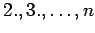
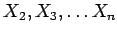
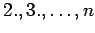
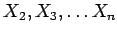
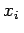

Inhalt Index DeskTop Bronstein

 Wahrscheinlichkeitsrechnung und Mathematische Statistik Mathematische Statistik Stichprobenfunktionen Grundgesamtheit, Stichproben, Zufallsvektor
Wahrscheinlichkeitsrechnung und Mathematische Statistik Mathematische Statistik Stichprobenfunktionen Grundgesamtheit, Stichproben, Zufallsvektor


Eine Zufallsgröße X wird durch ihre Verteilungsfunktion und deren Parameter charakterisiert, wobei die Verteilungsfunktion ihrerseits durch die Eigenschaften der Grundgesamtheit bestimmt ist. Diese sind aber bei Beginn einer statistischen Untersuchung nicht bekannt, so daß man möglichst viele Informationen mit Hilfe von Stichproben gewinnen muß. In der Regel wird man sich nicht auf eine Stichprobe beschränken, sondern mehrere Stichproben, praktischerweise vom gleichen Umfang  , untersuchen. Dabei zeigt sich, daß die Realisierungen von Stichprobe zu Stichprobe unterschiedlich ausfallen, d.h. der 1. Wert der 1. Stichprobe vom 1. Wert der 2. Stichprobe verschieden sein wird usw. Damit ist die Variable 1. Wert der Stichprobe ebenfalls eine Zufallsgröße, die mit X1 bezeichnet wird. Analog kann man für den -ten Stichprobenwert die Zufallsgröße  einführen, die man auch Stichprobenvariable nennt. Zusammengefaßt erhält man den Zufallsvektor
, untersuchen. Dabei zeigt sich, daß die Realisierungen von Stichprobe zu Stichprobe unterschiedlich ausfallen, d.h. der 1. Wert der 1. Stichprobe vom 1. Wert der 2. Stichprobe verschieden sein wird usw. Damit ist die Variable 1. Wert der Stichprobe ebenfalls eine Zufallsgröße, die mit X1 bezeichnet wird. Analog kann man für den -ten Stichprobenwert die Zufallsgröße  einführen, die man auch Stichprobenvariable nennt. Zusammengefaßt erhält man den Zufallsvektor
Jede konkrete Stichprobe vom Umfang n mit den Elementen , die einer Grundgesamtheit entnommen wurden, kann als Vektor